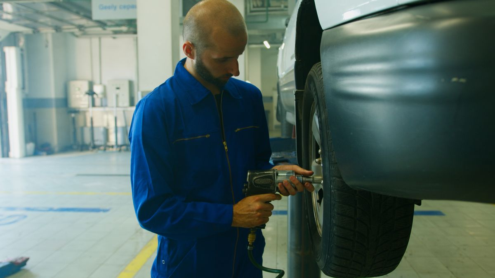
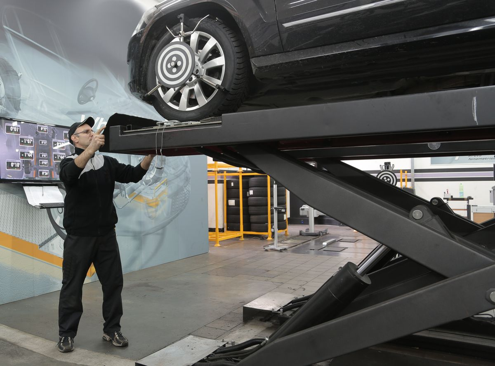
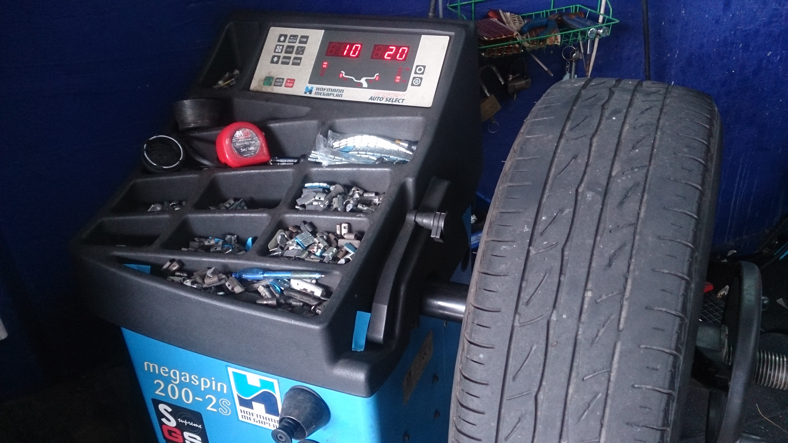
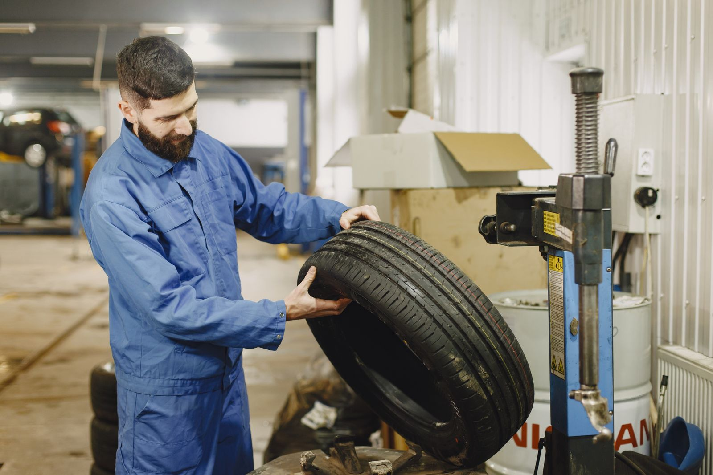
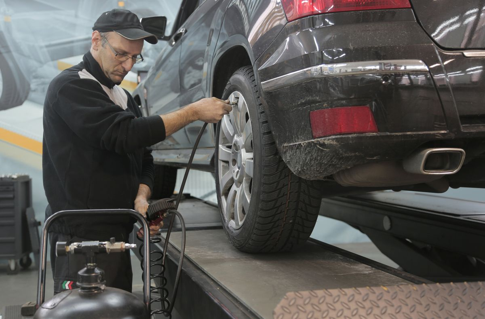

01 / Fitment
Tyre Fitting
Size verification, careful machine mounting, new valve inspection, measured inflation and torque check.
View service detailsIndicative times help plan a visit. Actual turnaround depends on vehicle condition, adjustment access and workshop queue.

Size verification, careful machine mounting, new valve inspection, measured inflation and torque check.
View service details
Computerised wheel-angle measurement, permitted adjustments and a final reading for straight tracking.
View service details
Precision machine dynamic measurement of assembly weight imbalance with corrective weights applied.
View service details
Tread leak location, thorough carcass safety check and internal repair only where damage is suitable.
View service details
Manufacturer tyre pressure check, valve look-over and measured dry nitrogen inflation for all tyres.
View service details*Illustrative starting prices in $ USD for this website concept. Final prices depend on vehicle, wheel size, materials and condition.
Tell us the symptom and when it appears.
We look at the relevant tyre, wheel and visible condition.
The service scope and indicative price are agreed.
Work ends with the relevant final check.
Not automatically. They address different conditions, though both may be checked after tyre replacement or when symptoms overlap.
No. Repairability depends on the puncture location, size, tyre construction and overall condition. Sidewall damage generally needs different guidance.
Tell us what the vehicle needs. Choose the service or describe the symptom and select a preferred appointment window.